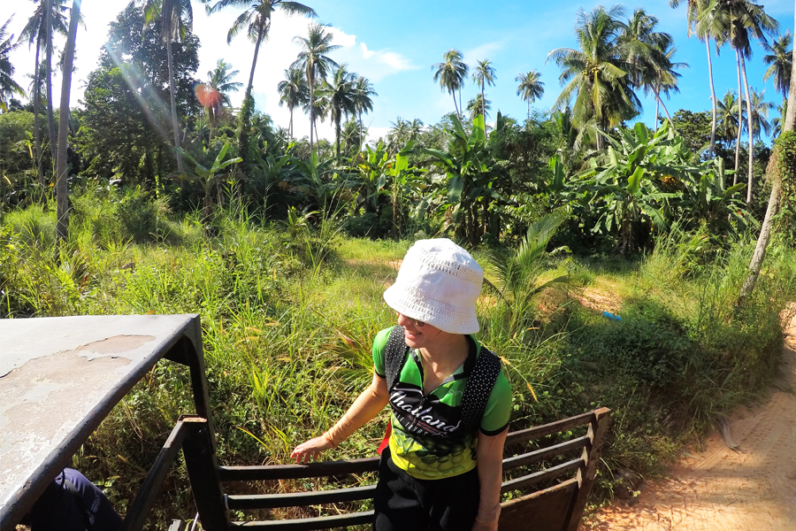
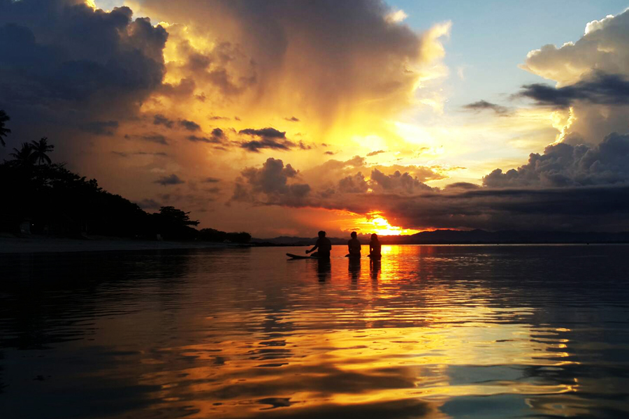
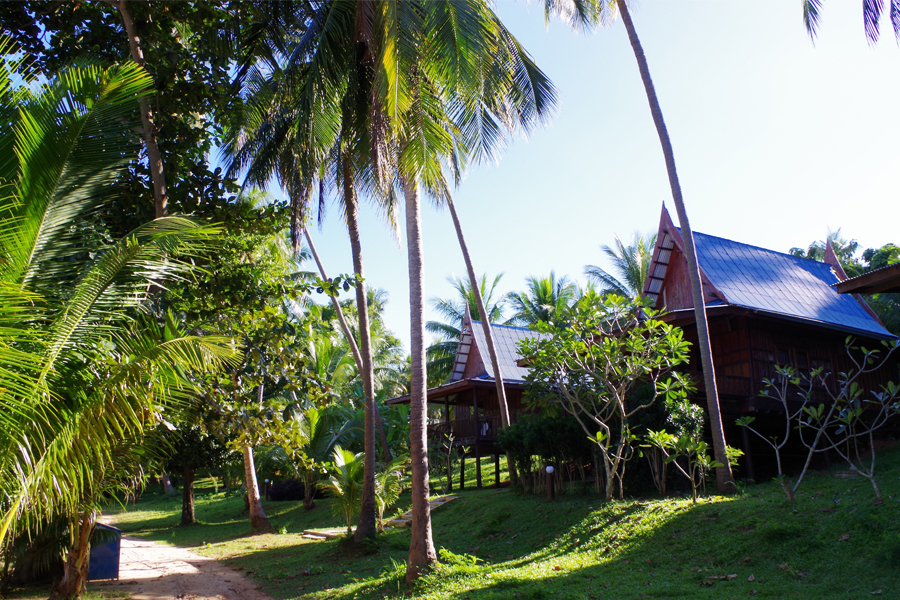

Daugelis Tailando keliautojų lankosi Bankoke, Puketo ar Krabio salose, tačiau retas yra girdėjęs apie Siamo įlankoje stūksančią Koh Talu salą. Vietiniai salą vadina „Destination of sea“ (liet. Kelionės tikslas – jūra), o ją tyrinėjusi kelionių ekspertų „Baltic Tours“ komandos narė, kūrybininkė ir tinklaraštininkė Snieguolė Valiaugaitė praminė „Gyvybės sala“. „Kur akis užmato čia plaukioja spalvingos žuvys, kalmarai, medžiuose siautėja nenuoramos beždžionės ir girdisi džiunglių paukščių giesmės“, – įspūdžius prisimena kelionių specialistė.

Koh Talu salą ir jos gyvūniją vietiniai labai saugo, tad nieko keista, kad turistai apie ją beveik nieko nežino. Salos istorija atskleidžia, kad iki Pirmojo pasaulinio karo joje gyveno tajai ir augino kokoso palmes. Žvejams Koh Talu apylinkės buvo neišsemiamas žuvies šaltinis. Deja, dėl nekontroliuojamos žvejybos ištekliai labai greitai išseko.

Vienas iš dabartinių salos savininkų – ponas Preeda Charoenpak (Preeda) taip pat turėjo sėkmingą žvejybos verslą. Tačiau pamatęs, kokią žalą tai daro jūrai, nusprendė jo atsisakyti. Pardavęs žvejybos laivus P. Charoenpak įkūrė poilsiavietę „Ban Maprao Koh Thalu Resort“ ir savo veiklą nusprendė paskirti paieškoms, kaip atkurti ir išsaugoti vandenyno turtus. Šis žmogus ir sala šiandien žinomi visame Tailande, tačiau keliautojų tai vis dar neatrasta vieta. Pasak saloje viešėjusios S. Valiaugaitės, Koh Talu siūlomos veiklos gerokai skiriasi nuo tų, kurias rasite populiariausiuose Tailando kurortuose. Užsiėmimai skirti ne vien siekiant patenkinti turistų poreikius, bet ir suteikiant jiems galimybę prisidėti prie salos gerovės.„Saloje išbandėme paviršinį nardymą, stebėjome vandens augmeniją bei gyvūniją ir mokėmės sodinti koralus. Koralo šakelės sodinamos į tam tikrus indus specialiuose rėmuose, kurie vėliau per 10 minučių turi būti panardinti į jūrą. Vietiniai šį augmenijos atstatymo procesą kasdien atlieka po keletą kartų.

Jie sako, kad koralai kasmet paauga apie 4 centimetrus“, – pasakoja šią salą pažinusi kelionių ekspertė. Koh Talu yra viena iš nedaugelio Tailando salų, kurią dėti kiaušinius pasirinko jūros vėžlių patelės. Sakoma, kad tai įrodymas, jog ponui P. Charoenpak pavyko išsaugoti natūralią salos ekosistemą. Besąlygiško gerumo vietiniai rūpinasi, kad vėžlių populiacija didėtų. Saloje veikia vėžlių slaugymo centras „Siam Marine Rehabilitation Foundation“. Koh Talu saloje vėžliai auginami, maitinami, gydomi, prausiami ir kai tampa pakankamai stiprūs, kad galėtų apsiginti ir savarankiškai išgyventi, paleidžiami į jūrą. Salos gyventojai sako, kad taip aktyviai prižiūrint vėžliukus, kasmet jų skaičius išauga net iki 3 kartų. „Tūkstančius vėžliukų šioje saloje „slaugo“ ponas Bunloet Phueak Tong (Bunloet), tačiau jam talkina ir turistai. Mes taip pat jauniklius maitinome, prausėme, o vieną jų, pavadinę Baltic’a, paleidome į jūrą“, – įspūdžiais dalijasi S. Valiaugaitė.